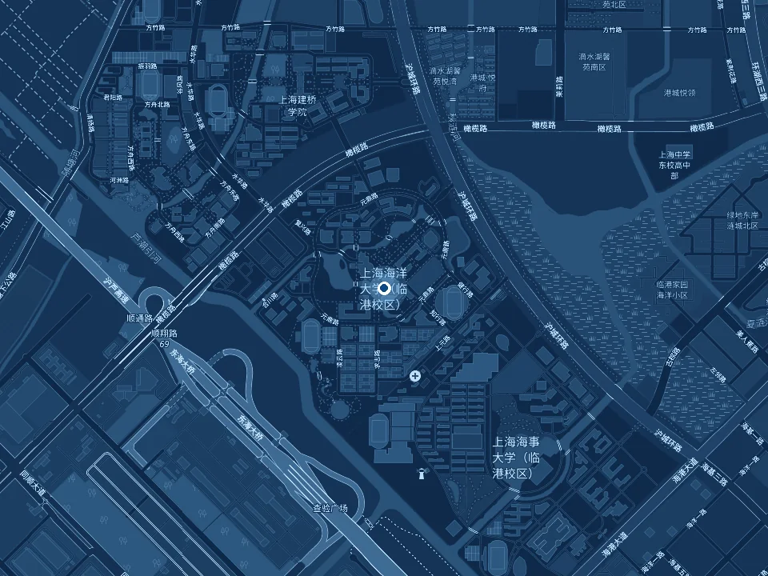

Contact
Good science starts
with a conversation.
For research enquiries and potential collaboration, contact Professor Fan Zhang.
f-zhang@shou.edu.cnFind us in Shanghai
Shanghai Ocean University999 Huchenghuan Road
Pudong New Area, Shanghai 201306
China

Open in 高德地图 (opens in a new tab)Map © OpenStreetMap contributors (opens in a new tab)
Shanghai Ocean University (opens in a new tab)Opportunities & collaboration
Work with us.
Interested in graduate study, a research visit, or a collaboration? Contact Fan Zhang to discuss your research interests and potential opportunities in fisheries science.
Get in touch